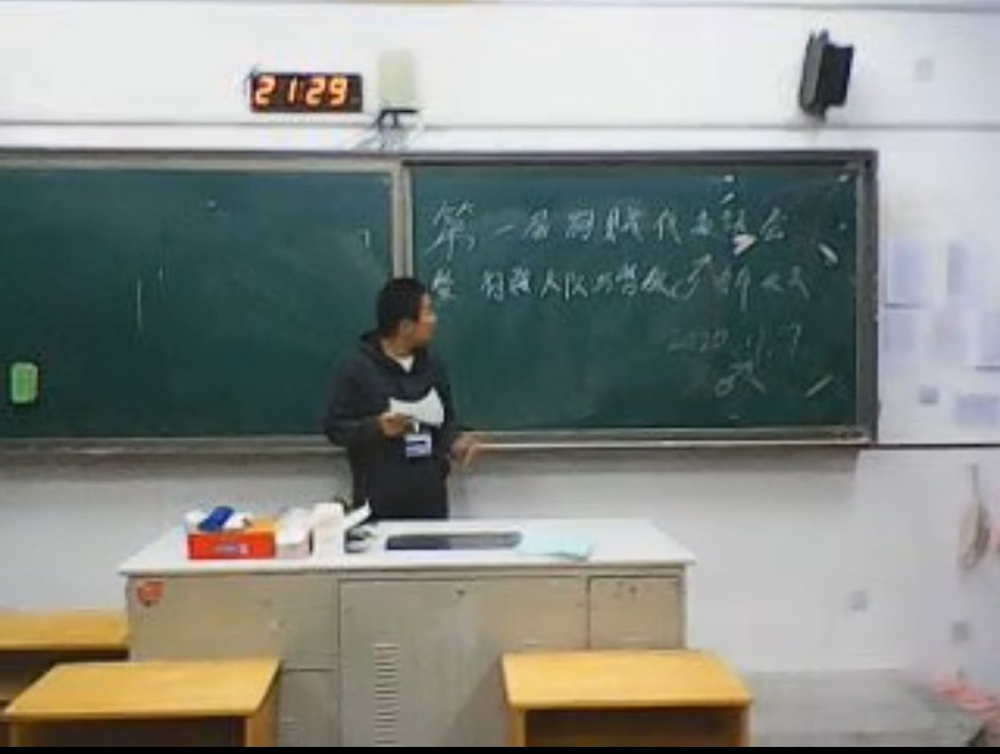
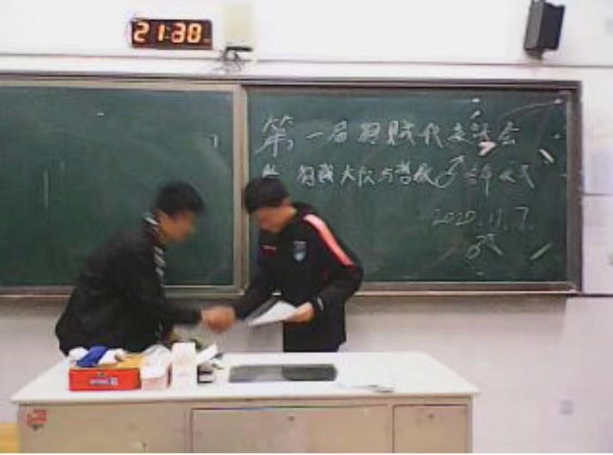
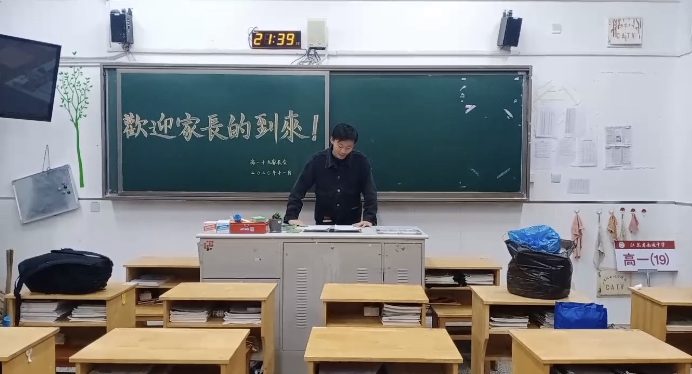
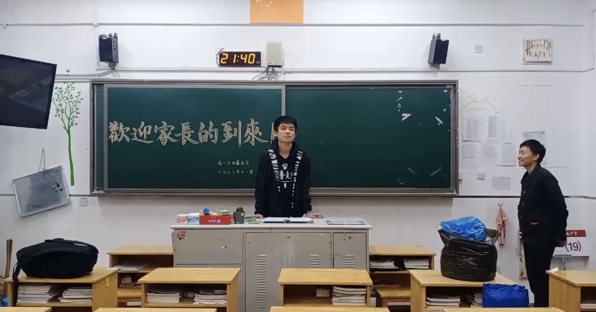
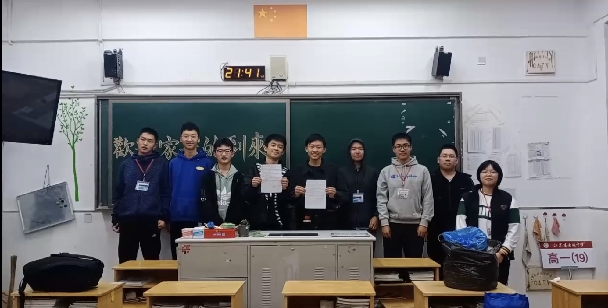
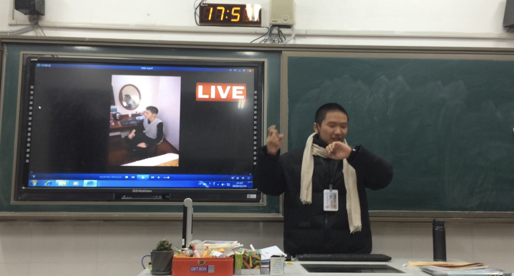
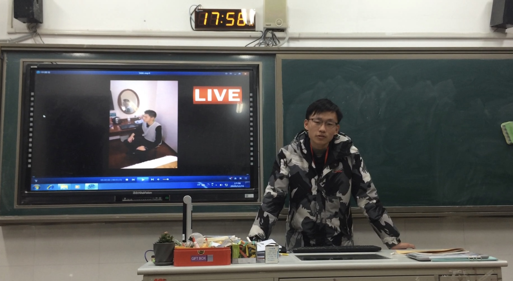
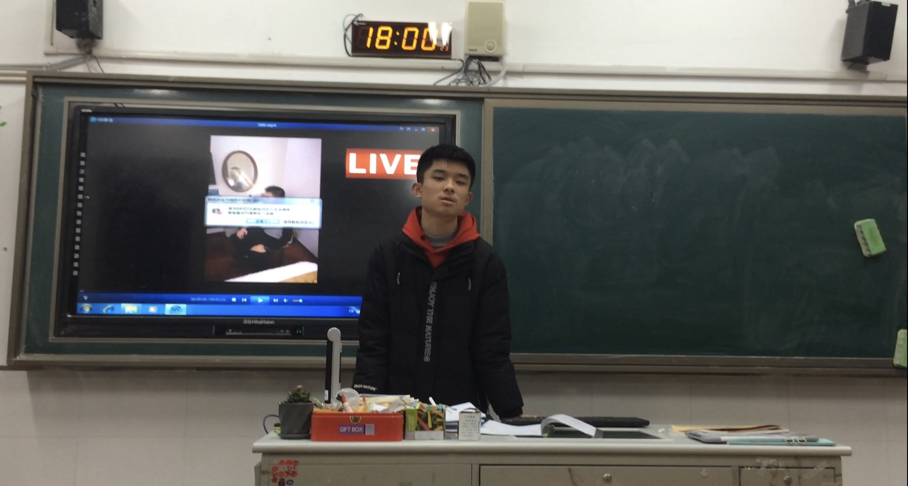

 
热烈庆祝狗贼大队与哲教达成长期合作协议。期待着两组织在通中一起发扬狗贼文化与哲学精神
狗贼大队临时会议11.14晚于高一19班教室召开，会议由哲教真主成骐言主持，会议全程录像。
 
会议肯定了狗贼大队在1个月来灭亡辉煌主义的伟大成果，安排了下一阶段的任务，将下一阶段的中心放在发展狗贼精神，吸纳更多狗贼上。会议对研学旅行的组织计划做了安排，为将于研学期间线上召开的狗贼大队第二次全体会议做了准备。会议最后还强调了要继续与哲教合作，继续传播狗贼精神和哲学文化。

最后，全体参会人员合影。
狗贼大队第二次全体会议于11.20晚线上召开，会议由胡恒主持。
会议为在前往宾馆途中发生碰撞的上海文化研学路线的同学进行了时长30秒的默哀。 会议正式开始后，朱辰祎进行了理论方面的演讲，系统分析了狗贼大队的目标与实现目标的阻碍；张徐轩宣布了狗贼大队将在一中建立分部的消息，分部将与哲教一中分部合作，并且宣布了分部的领导人选；成骐言从狗贼大队与哲♂教内部分析问题，要增多骨干，反对心态随意者；张义涛最后总结发言，提出了下一阶段的目标，希望全体成员继续努力，传播狗贼精神与哲学文化！
本次狗贼二大会议后，各部门立即展开相关工作，其中由南京科技分部成骐言、高范铖主演，冒杰睿摄影，PDD美术指导的Van♂樣、魔♂男摔跤♂翻拍影片圆满成功，并获得狗贼与兄♂贵们的一致好评。
狗贼大队11.26日晚在高一19教室，与哲教真主，辉煌集团总裁达成三方合作协议。狗贼大队与哲教联盟（下称“狗哲联盟”）领导人，与辉煌总裁基于班级现状，以大局为重，决定开展合作，旨在促进班级发展，同学和谐。两组织坚决反对一切破坏班级发展和同学团结的行为。狗哲联盟停止一切对辉煌的打击行动。
狗贼大队第三次全体会议暨年终总结会议于12.31傍晚在高一（19）教室召开。会议由胡恒主持，会议全程录像
 

会上，哲教真主成骐言总结了一年来狗贼大队的得与失，特别是转入地下后又回归的经历。大队长张义涛简要回顾了一年的重大事件，并提醒大家依然存在问题，勉励大家继续努力。会议还重新展示了狗贼大队今年最具影响力的成果：更衣室翻拍。
会议最后在掌声中结束！